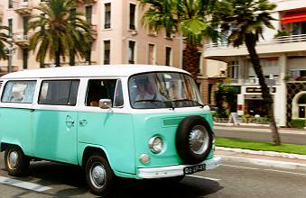
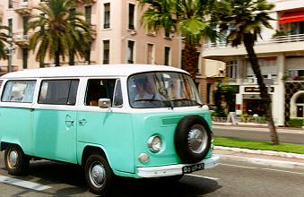
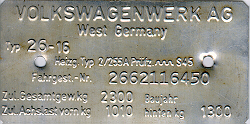

|  |
|  |
| about about myself, this page and transporters |
meeting pictures pictures of meetings I visited |
sightings pictures of aircooled sightings |
transporterlinks a few important links |
type2.com home of this page |
| 1. | 6-Up | 1978 Kombi (My very first car!) |
| 2. | Concordia | 1977 Delivery van (waiting for restoration) |
| 3. | Policevan | 1970 Kombi (waiting for restoration) |
| 4. | Die Grotte | 1971 panelvan (daily driver!) |
| 5. | Skunk | 1973 beetle 1303S (planned daily driver) |
previously starring in my collection (in order of purchase)
| 1. | Dukapano | 1976 Crew Cab (recycled) | 2. | AK-92 | 1974 Beetle (sold) | 3. | Franekerbus | 1976 Delivery van (recycled) | 4. | Summer of '69 | 1969 Westfalia camper (recycled) | 5. | Gjaltbus | 1979 Kombi (sold) | 6. | Croky de Krokante Kever | 1973 Beetle (name in English: Croky the Crunchy Beetle)(sold) | 7. | sliding roof bus | 1979 kombi (recycled) | 8. | Nijetrijnebus | 1969 panelvan(recycled) | 9. | Fastback | 1971 1600TL Automatic(sold) |
|  |  |
Recognize these plates? They are fixed in all Volkswagen Transporters from 1958 until 1979. If you want to know more about them, simply follow this link:
[top]
|
Last update: December 29th, 2002 Copyright © 1997 Vincent Molenaar molenari@hotmail.com |
DISCLAIMER |
Vincenzo's Volkswagen Vans
|